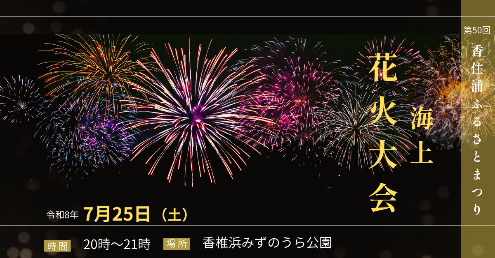

花火大会 バナー制作

制作目的
夏の花火大会の開催情報を分かりやすく伝え、
イベントへの興味・参加意欲を高めることを目的に制作しました。
ターゲット
夏祭りや花火大会を楽しみたい家族連れやカップル、地域の方を想定しています。
デザインの工夫
複数の花火が夜空に広がる写真を大きく使用し、一目で「花火大会」とわかる華やかな
ビジュアルにしました。
背景を暗い色でまとめることで花火の鮮やかさを際立たせ、
黄色をアクセントカラーとして使用し、夏祭りらしい華やかさと高級感を表現しています。
また、開催日・時間・場所などの重要な情報を下部にまとめ、視線の流れを意識して情報
を整理しました。
右側にはイベント名を縦に配置することで、一般的な横書きとは違った和の雰囲気を演出
しています。
制作時間
40分
使用ツール
Canva